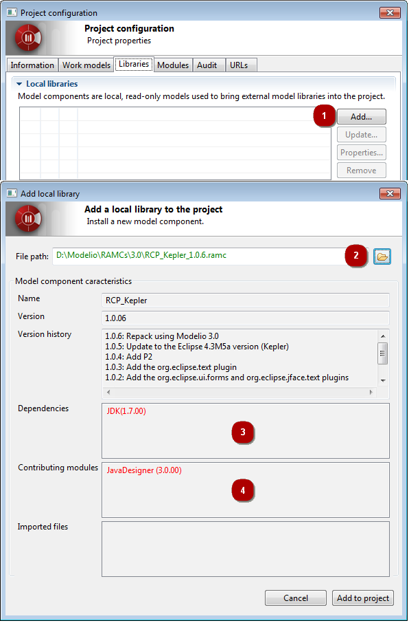

Deploying model components¶
Introduction¶
The deployment of a model component introduces us into the realm of model
component usage, and is the first user-oriented phase of the model component
life cycle (as opposed to the developer-oriented model component
development and packaging phase).
Model components are deployed by users wishing to use them in their own
projects. When a model component has been deployed in a project, it and the
model elements it contains appear in the “Model” view in blue, and are in read-
only mode.
If a model component depends on another model component, the other model
component must be deployed first.
Model component deployment includes the following operations:
Selecting a model component to deploy¶
To deploy a model component, carry out the steps shown in the screenshots
below.

Deploy model component
- In ‘Local libraries’ frame of the ‘Libraries’ tab of the project configuration, click on the ‘Add…’ button.
- Select the model component (*.ramc file) you wish to add to your project.
- Not all mandatory modules have been installed in the project in which
you want to deploy the model component. If the model component you want to
deploy includes note and tagged value types specific to a given module, then
this module must be installed in your project before you deploy the model
component. To solve this problem, simply run the “Configuration/Modules” command,
and install the module you need.
- A dependency existing between the model component you want to
deploy and another model component which must be deployed first in a project
has not been respected. To solve this problem, simply first deploy the other
model component (indicated in the “Dependencies” field) in your project, in
the exact version stated, and then run the deployment operation for the model
component you want to deploy again.